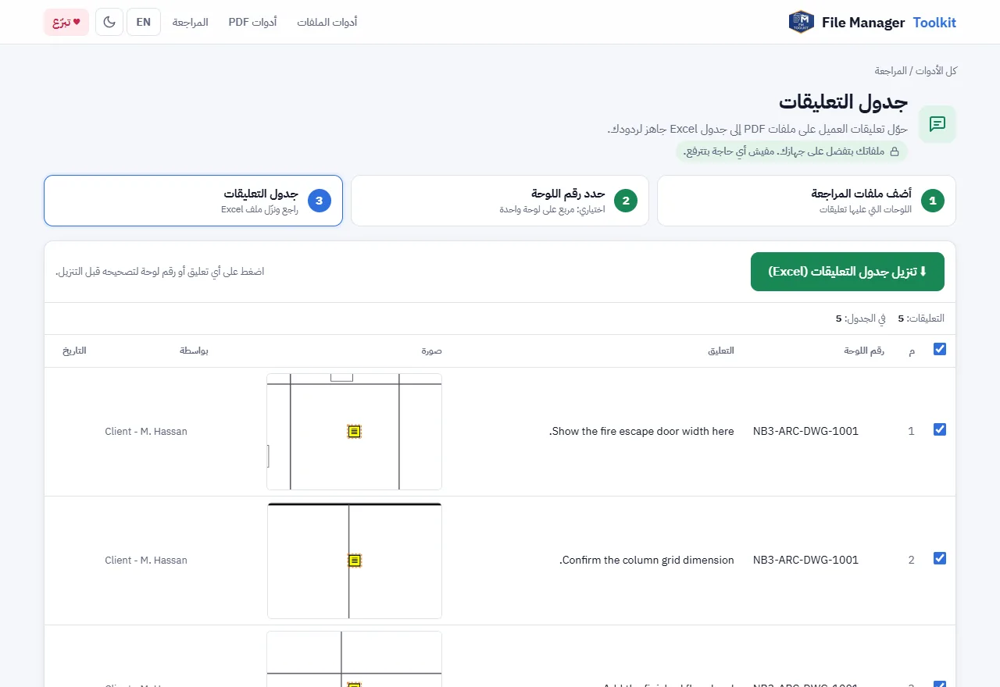

طريقة تصدير تعليقات PDF إلى Excel (جدول الرد على التعليقات)
حوّل تعليقات المراجعة على لوحات PDF إلى جدول رد على التعليقات في Excel، فيه رقم اللوحة والتعليق والكاتب والتاريخ وصورة لمكان كل تعليق.
ملفاتك بتفضل على جهازك. مفيش أي حاجة بتترفع.
الإجابة باختصار
افتح أداة جدول التعليقات، وأضف ملفات PDF التي عليها التعليقات، وارسم مربعاً حول رقم اللوحة إذا أردت، ثم اضغط "تنزيل جدول التعليقات". تحصل على صف في Excel لكل تعليق، مع صورة لمكانه وعمودين فارغين للرد والحالة.
لماذا نسخ التعليقات يدوياً مشكلة
عندما يراجع العميل أو الاستشاري التسليم، تعود التعليقات كملاحظات وسحابات وأسهم على ملفات PDF. وقبل أن ترد، على شخص ما أن ينسخ كل تعليق إلى جدول الرد، ويكتب رقم اللوحة، ويصف مكان التعليق على اللوحة.
ملخص التعليقات وتصدير التعليقات في Acrobat يعطيانك قائمة نصوص، لكن بدون رقم اللوحة وبدون صورة للمكان، فيضطر من يرد أن يفتح كل ملف PDF ليفهم التعليق. مع 80 تعليقاً على 30 لوحة، هذه ساعات من النسخ قبل أن يبدأ العمل الحقيقي.
خطوة بخطوة
أضف ملفات PDF التي عليها التعليقات
افتح الأداة واضغط "اختر ملفات PDF"، أو "اختر فولدر" لمجموعة مراجعة كاملة. تعدّ الأداة التعليقات في كل ملف أثناء قراءته.
حدد رقم اللوحة (اختياري)
على لوحة واحدة، اسحب مربعاً حول رقم اللوحة في جدول العنوان. بعدها يظهر في كل صف رقم اللوحة التي جاء منها التعليق، بدلاً من اسم الملف فقط.
راجع قائمة التعليقات
يظهر كل تعليق مع رقم اللوحة والنص والكاتب والتاريخ وصورة للمنطقة حوله. اضغط على التعليق أو رقم اللوحة لتصحيحه، وألغِ تحديد أي صف لا تريده في الجدول.
أضف بيانات المشروع
املأ "المشروع" و"التسليم / المرجع" و"المراجِع" لتظهر أعلى الجدول. وفعّل "تضمين العلامات بدون نص أيضاً" إذا كانت السحابات والأسهم مهمة.
نزّل جدول التعليقات
اضغط "تنزيل جدول التعليقات (Excel)". الملف فيه أعمدة: الرقم، رقم اللوحة، التعليق، الصورة، الكاتب، التاريخ، الرد، والحالة.

ما الذي يُقرأ من ملف PDF
- الملاحظات اللاصقة ومربعات النص والتعليقات بالأسهم، مع نصها.
- السحابات والمستطيلات والأسهم والتظليل التي عليها ملاحظة.
- اسم الكاتب والتاريخ المحفوظان مع كل تعليق.
- الردود، وتُضاف إلى التعليق الذي ترد عليه عند تفعيل "إضافة الردود إلى التعليق الذي ترد عليه".
التعليقات تُقرأ من ملف PDF نفسه، فتعمل سواء كُتبت في Adobe Acrobat أو Bluebeam Revu أو Foxit أو PDF-XChange أو تطبيق على التابلت، طالما حُفظت كتعليقات PDF ولم تُدمج (Flatten) في اللوحة.
الرد على التعليقات
أرسل ملف Excel للفريق، واكتبوا الردود في عمود الرد، وحددوا الحالة مفتوح أو مغلق. ولأن كل صف فيه رقم اللوحة وصورة، لا يحتاج أحد أن يفتح ملفات PDF مرة أخرى ليفهم المطلوب.
اعمل جدول التعليقات الآن
مجاني، يعمل داخل متصفحك، ولوحاتك لا تخرج من جهازك أبداً.
افتح أداة جدول التعليقات ←أسئلة شائعة
كيف أصدّر تعليقات PDF إلى Excel؟
أضف ملفات PDF إلى أداة جدول التعليقات واضغط "تنزيل جدول التعليقات". كل تعليق يصبح صفاً في ملف Excel.
هل تعمل مع تعليقات Bluebeam؟
نعم. Bluebeam يحفظ التعليقات كتعليقات PDF عادية، فتُقرأ مثل تعليقات Acrobat.
هل يمكن الحصول على صورة لكل تعليق في Excel؟
نعم. كل صف فيه صورة لجزء اللوحة المحيط بالتعليق.
هل تُرفع لوحات العميل؟
لا. متصفحك هو الذي يقرأ ملفات PDF على جهازك، ولا يُرسل أي شيء لأي سيرفر.
لماذا تختفي بعض التعليقات؟
إذا دمج المراجع التعليقات في الملف (Flatten)، تصبح جزءاً من اللوحة ولا تعود تعليقات. اطلب ملف PDF بالتعليقات كما هي، أو فعّل "تضمين العلامات بدون نص أيضاً" للسحابات والأسهم.